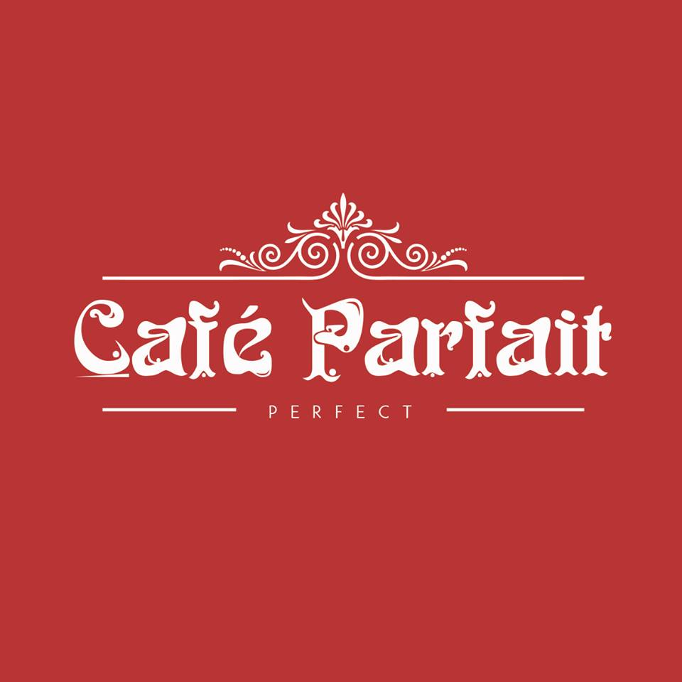
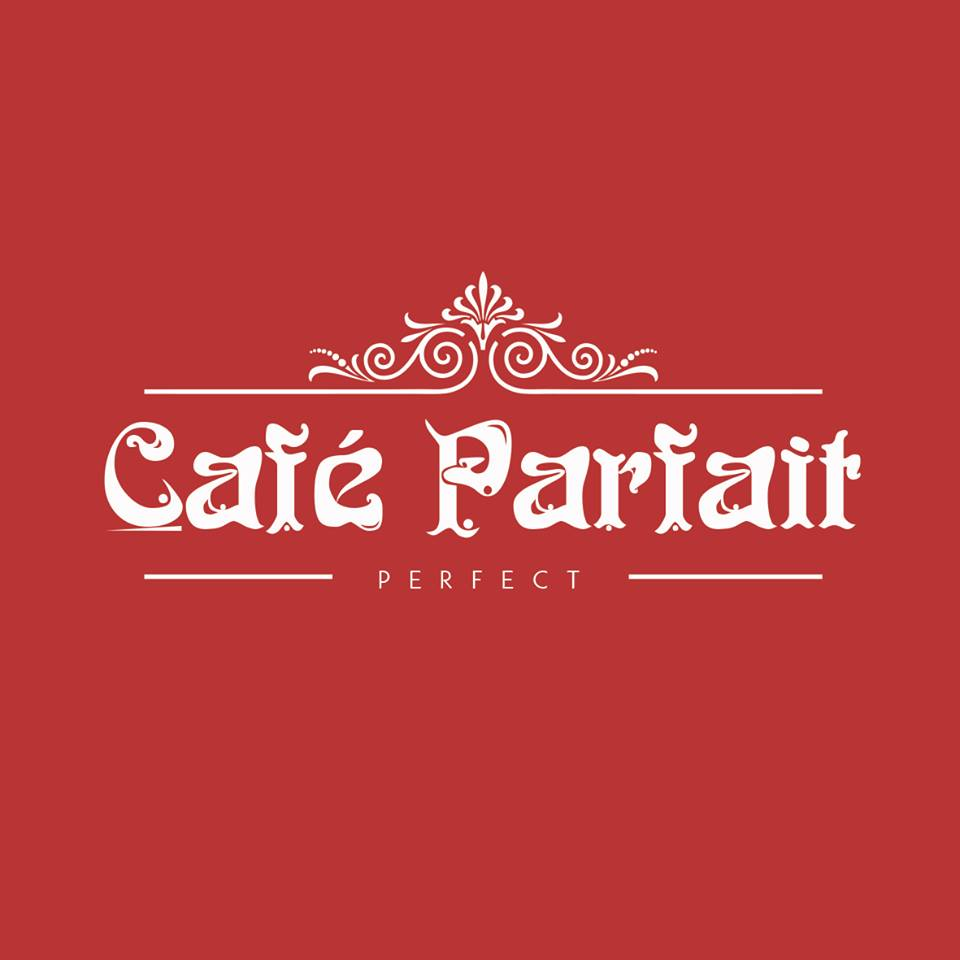
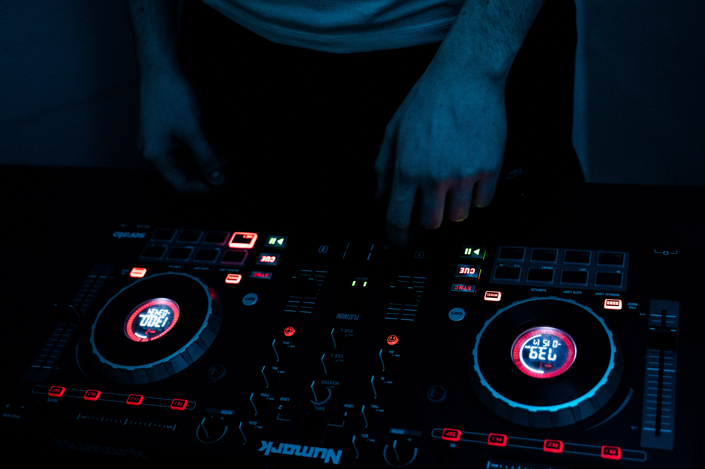
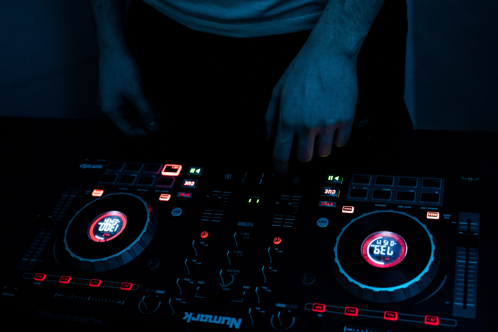
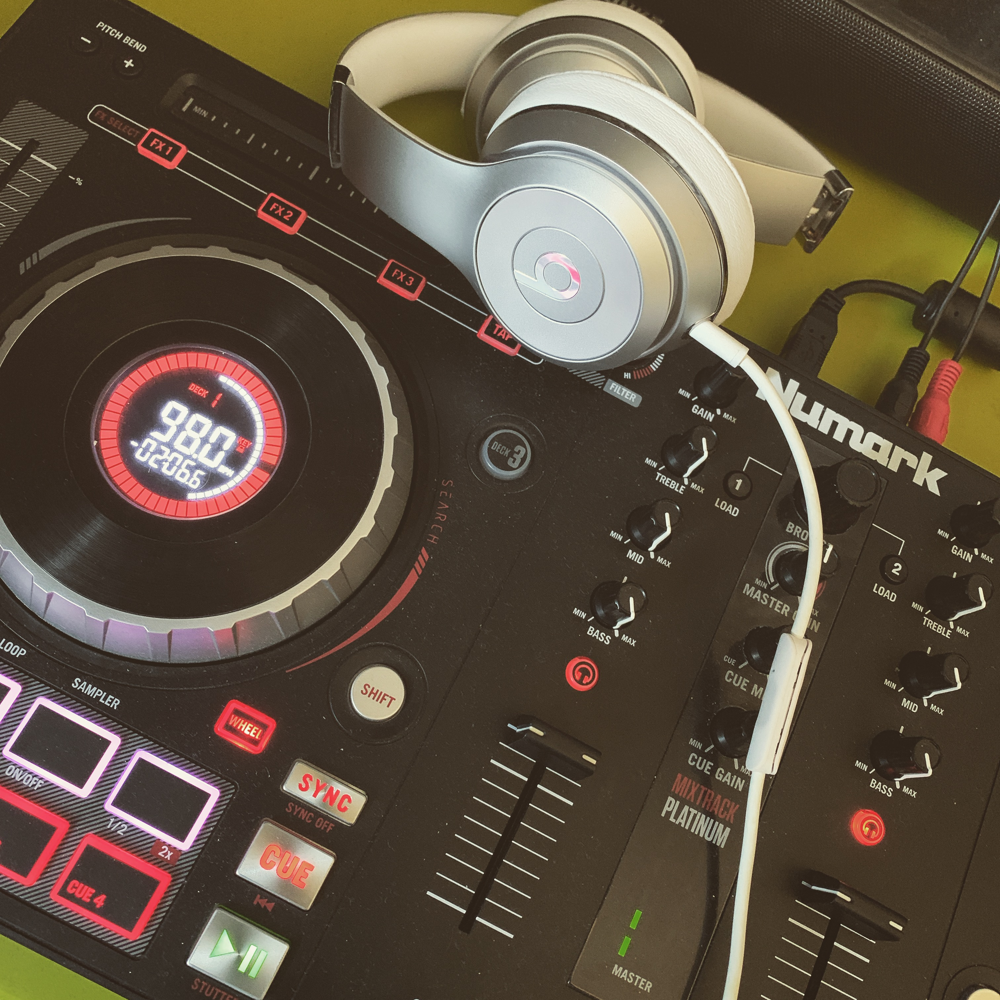
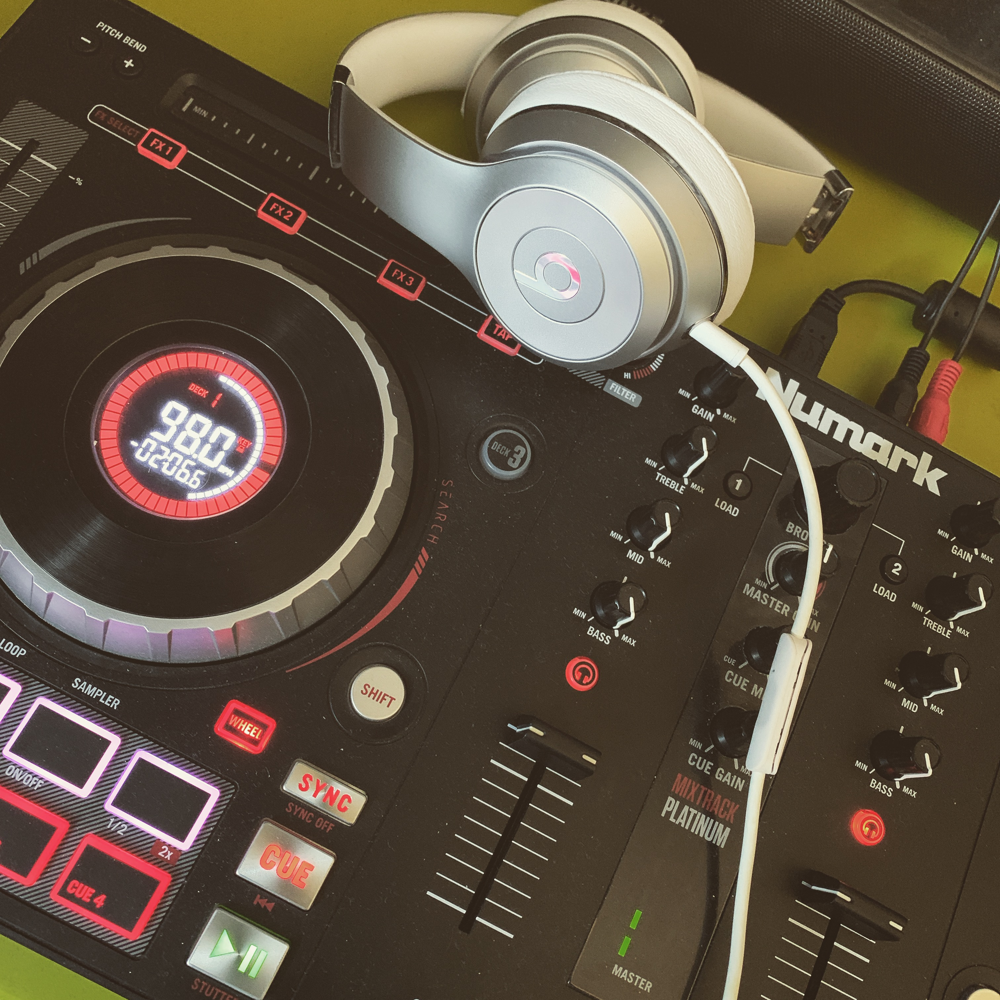

About DJ Crocombe
DJ CROCOMBE is an upcoming grime DJ and has been compared to the likes of Charlie Sloth with his mixes. His talents started from learning of his older brother to DJ but DJ Crocombe found a love for the hobby and turned it into a part-time job. While balancing his DJ lifestyle with Uni he said he ‘struggled to keep up with Uni the first year but is balancing it we now and enjoying both’. He is currently performing in Southampton and Winchester nightclubs such as Tokyo and Buddha. He is known for performing UK Grime with artists such as D-Block-Europe, Aitch and Headie One. DJ CROCOMBE is hoping to move to the bigger clubs in Southampton before moving to other major clubs around the country. He is hoping to release a mixtape by the end of 2020 with his own songs in. If you want to book DJ Crocombe as your DJ then look at his contact details and head to the booking page.

Events by DJ Crocombe
 



 

 
